材料 20個分
※粉量を変えると自動計算されます
生地
コーティング
型
作り方
生地
STEP 1
バターをクリーム状にし、粉砂糖を加え混ぜる
バターをなめらかなクリーム状にしてから粉砂糖を加え、全体が均一になるまで混ぜ合わせます。
バターをなめらかなクリーム状にしてから粉砂糖を加え、全体が均一になるまで混ぜ合わせます。
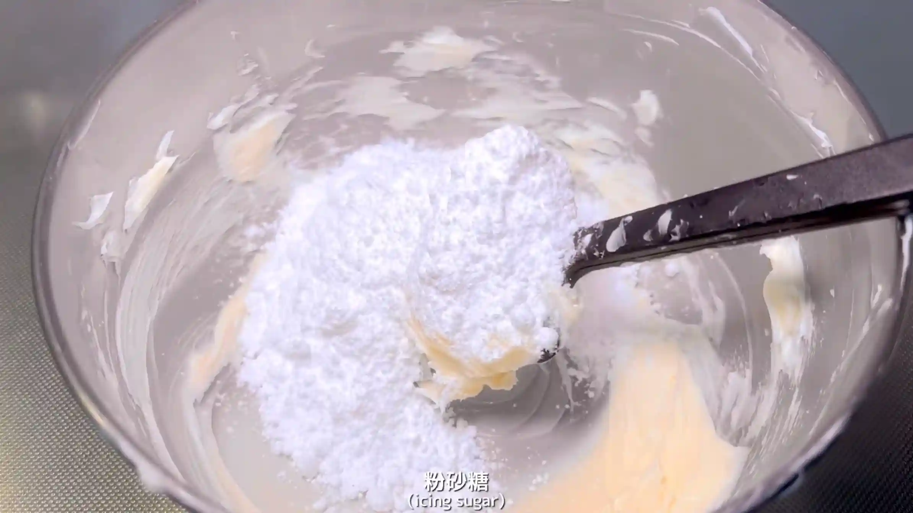
STEP 2
卵、バニラエッセンスを加え混ぜる
卵を加え、バターと粉砂糖が分離しないよう、全体がなめらかになるまで混ぜ合わせます。
卵を加え、バターと粉砂糖が分離しないよう、全体がなめらかになるまで混ぜ合わせます。
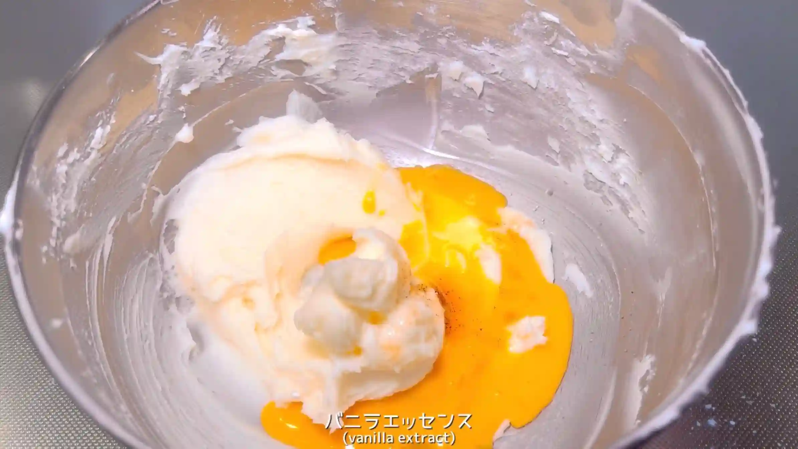
STEP 3
薄力粉を2回に分け加え、混ぜる
薄力粉を2回に分けて加え、粘り気が出ないようにヘラでさっくり混ぜ合わせます。粉っぽさが少し残っていても、生地がまとまってきたら、次の工程へ進みます。
薄力粉を2回に分けて加え、粘り気が出ないようにヘラでさっくり混ぜ合わせます。粉っぽさが少し残っていても、生地がまとまってきたら、次の工程へ進みます。
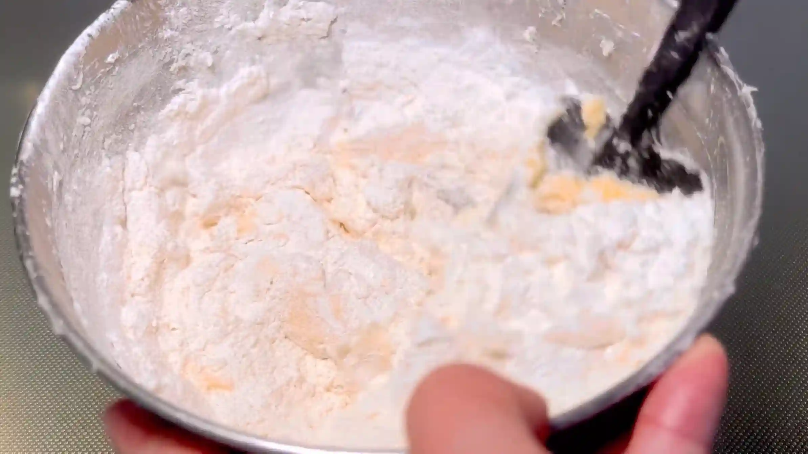
STEP 4
生地を1時間冷蔵する
生地を手でひとまとめにして、ラップで包み冷蔵します。冷やすことでバターが締まり、この後の生地を伸ばしたり型で抜いたりする作業がしやすくなります。この間にクッキー型を作っておきます。
生地を手でひとまとめにして、ラップで包み冷蔵します。冷やすことでバターが締まり、この後の生地を伸ばしたり型で抜いたりする作業がしやすくなります。この間にクッキー型を作っておきます。
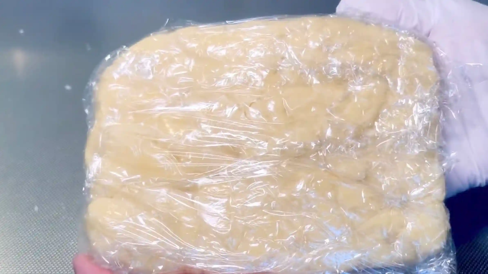
STEP 5
生地を20㎝×25㎝に伸ばす
生地をできるだけ均一な厚さに伸ばします。厚みをそろえておくと焼きムラが出にくく、型で抜いたクッキーの大きさもそろえやすくなります。
生地をできるだけ均一な厚さに伸ばします。厚みをそろえておくと焼きムラが出にくく、型で抜いたクッキーの大きさもそろえやすくなります。
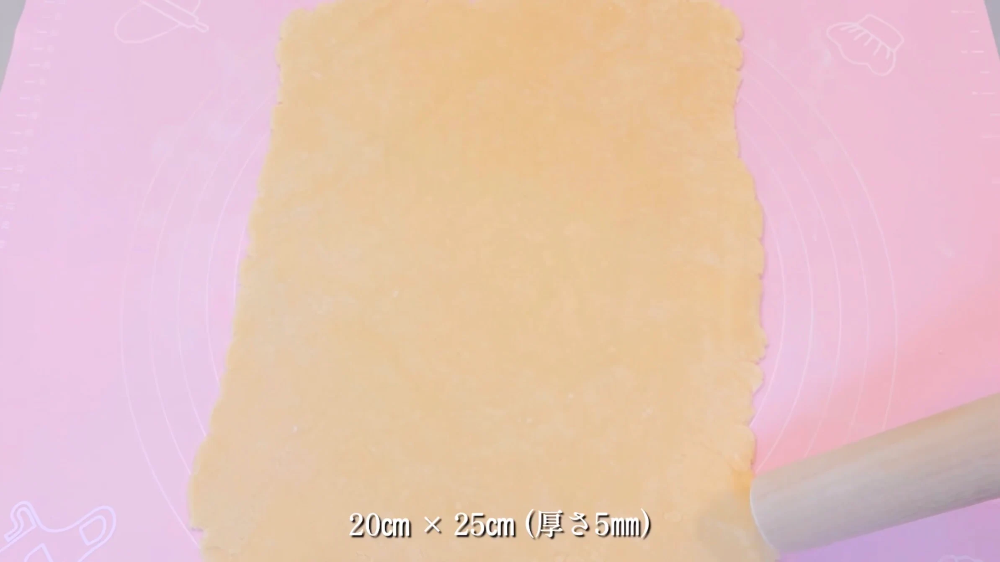
STEP 6
生地を型で抜く
手作りしたクッキー型で抜きます。余った生地はまとめて再び伸ばして使います。
手作りしたクッキー型で抜きます。余った生地はまとめて再び伸ばして使います。
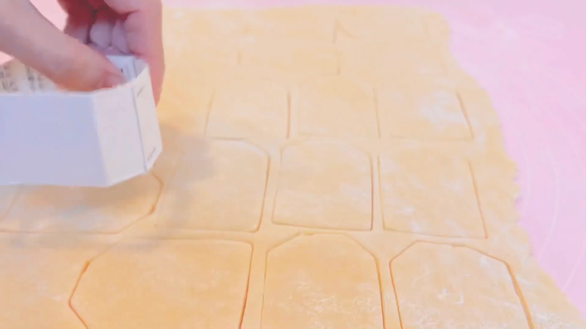
STEP 7
糸を通す穴をあける
ティーバッグの紐を通すための穴を、生地の上部にあけます。焼くと穴が小さくなることがあるため、紐が通るように、口金などを使い、少し大きめに穴をあけておきます。
ティーバッグの紐を通すための穴を、生地の上部にあけます。焼くと穴が小さくなることがあるため、紐が通るように、口金などを使い、少し大きめに穴をあけておきます。
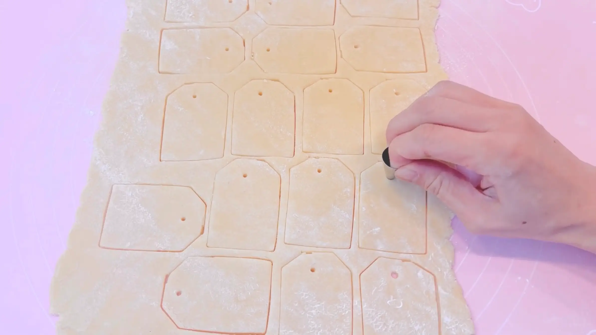
STEP 8
天板にのせる
オーブンシートを敷いた天板に、型抜きした生地を間隔をあけて並べます。焼いている間に生地が少し広がるため、クッキー同士がくっつかないように間隔をあけておきます。我が家の天板では一度にのりきらなかったため、残りの生地は冷蔵しておき、2回に分けて焼いていきます。
オーブンシートを敷いた天板に、型抜きした生地を間隔をあけて並べます。焼いている間に生地が少し広がるため、クッキー同士がくっつかないように間隔をあけておきます。我が家の天板では一度にのりきらなかったため、残りの生地は冷蔵しておき、2回に分けて焼いていきます。
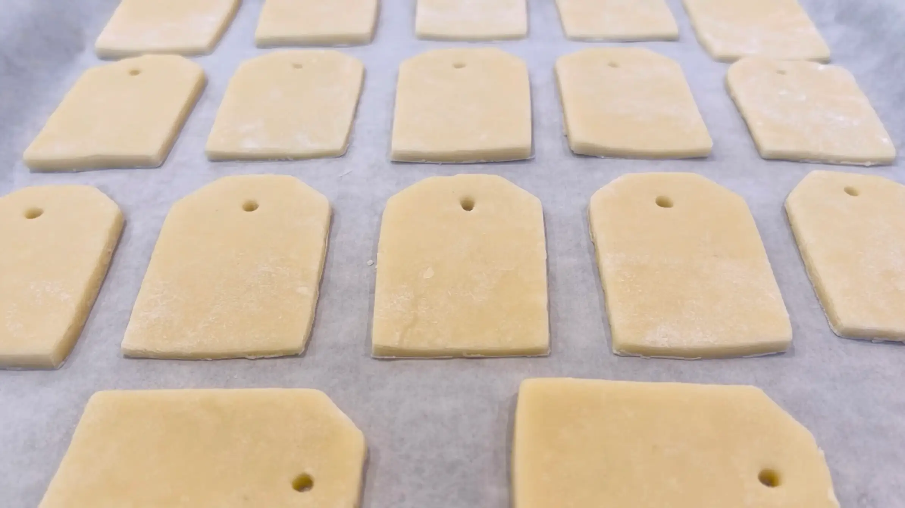
STEP 9
オーブン170℃で20分焼く
クッキーの縁がほんのり色づくまで焼きます。焼き時間は目安とし、焼き色を確認しながら、ご家庭のオーブンに合わせて調整してください。
クッキーの縁がほんのり色づくまで焼きます。焼き時間は目安とし、焼き色を確認しながら、ご家庭のオーブンに合わせて調整してください。
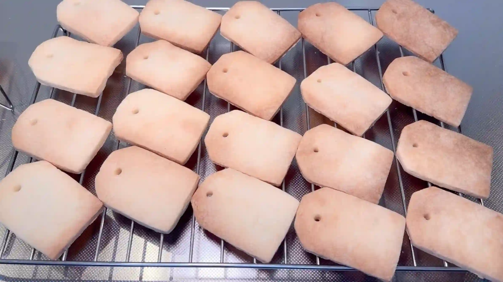
STEP 10
チョコでコーティングする
焼き上がって冷ましたクッキーの下部分を、湯煎で溶かしたチョコレートに浸してコーティングします。クッキーがしっかりチョコに浸せるよう、少し深さのある容器で作業するのがおすすめです。
焼き上がって冷ましたクッキーの下部分を、湯煎で溶かしたチョコレートに浸してコーティングします。クッキーがしっかりチョコに浸せるよう、少し深さのある容器で作業するのがおすすめです。
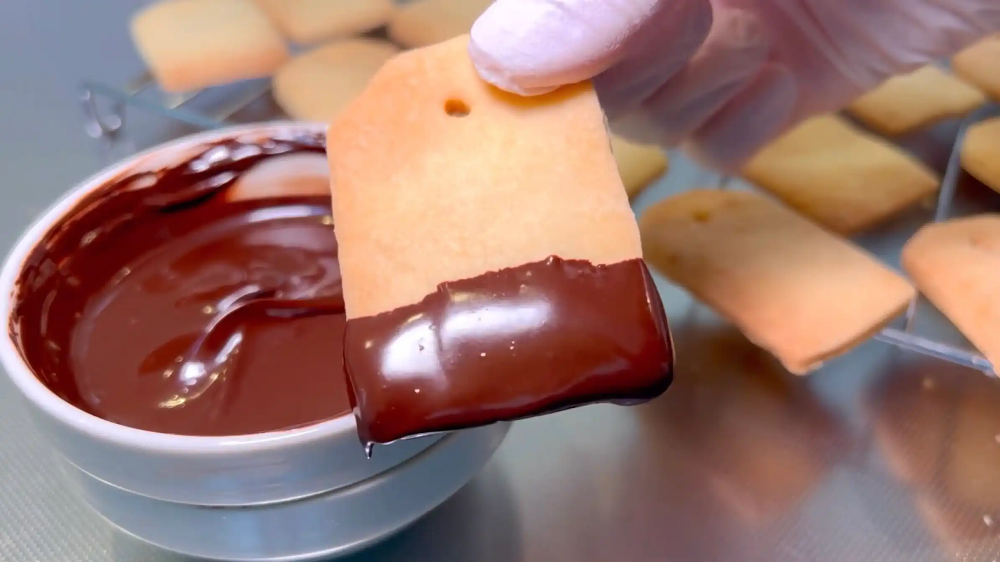
STEP 11
チョコを固める
クッキーの穴に竹串を通して持ち上げ、チョコレートが固まるまで吊るしておきます。
クッキーの穴に竹串を通して持ち上げ、チョコレートが固まるまで吊るしておきます。
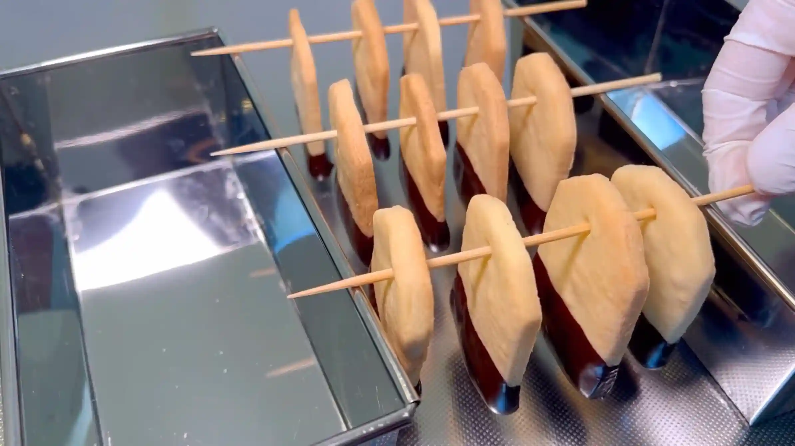
STEP 12
糸を通し、タグをつける
チョコレートが完全に固まったら竹串を外し、穴に紐を通してお好みのタグをつけます。ティーバッグのように仕上げると、とても可愛らしいクッキーになります。
チョコレートが完全に固まったら竹串を外し、穴に紐を通してお好みのタグをつけます。ティーバッグのように仕上げると、とても可愛らしいクッキーになります。
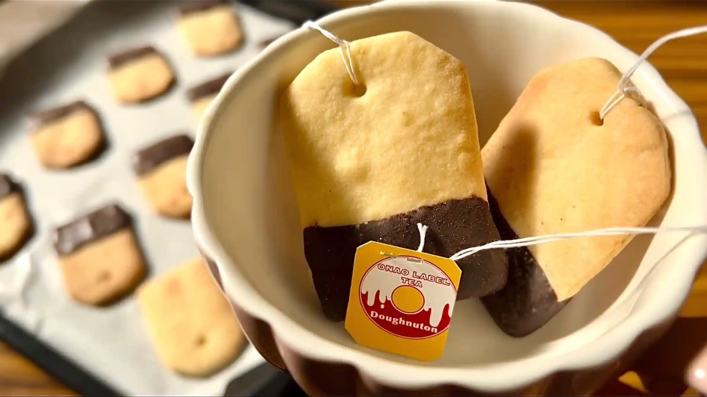
クッキー型
STEP 1
牛乳パックを3㎝幅でカットする
牛乳パックの長い辺を3㎝幅にカットします。
牛乳パックの長い辺を3㎝幅にカットします。
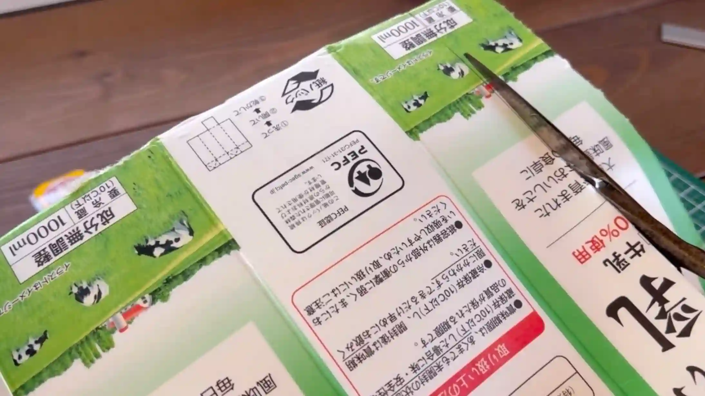
STEP 2
ティーバッグのクッキー型を作る
画像を参考に折り曲げ、ホッチキスでしっかり固定します。
画像を参考に折り曲げ、ホッチキスでしっかり固定します。
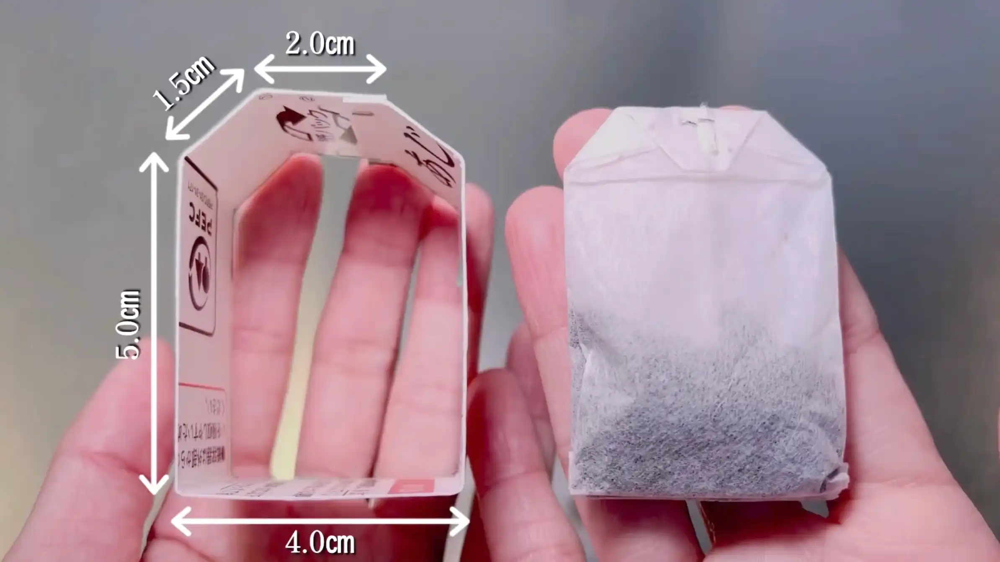
動画でチェック
おいしく作るためのワンポイントコラム
専用の型がなくても、牛乳パックを縦にカットして、ホッチキスで留めれば、ティーバッグの型が手作りできます。
第100回の記念に、紅茶のパックの形をした、見た目にもとっても可愛い『ティーバッグクッキー』を作ります。楽しく作る3つのコツをまとめました。
① 砂糖選びのコツ
今回のクッキーは、エッジを綺麗に出すことが大切です。一般的なクッキーによく使うグラニュー糖で作ると、ざくざくとした食感で美味しい反面、焼き縮みや広がりが大きく形が少し崩れやすくなります。そこで今回は粉砂糖を使用するのがポイント。生地のキメが細かく均一になり、型抜きした形をそのままキープして綺麗に焼き上げることができます。
② 手作り型のコツ
専用の型がなくても、牛乳パックを使ってティーバッグの型を手作りすることができます。牛乳パックを縦にカットして、ホッチキスでパチンと留めるだけで完成です。生地を伸ばす際は、型抜きしやすいように打ち粉をして、紐を通すための穴をストローなどで事前に開けておけば準備OKです。
③ コーティングのコツ
焼き上がったクッキーにチョコレートをディップすることで、まるで紅茶が染み込んでいるかのようなリアルで可愛い見た目になります。湯煎で溶かしたチョコにクッキーをまっすぐ浸し、お好みの高さで均一にコーティングするのがコツです。生地自体の甘さを少し控えめに作っておくことで、たっぷりついたチョコの甘みと絶妙なバランスになります。
お好きなタグをつければ、自分だけの特製ティーバッククッキーの完成です。ぜひ特別なクッキー作りを体験してみてください。
第100回の記念に、紅茶のパックの形をした、見た目にもとっても可愛い『ティーバッグクッキー』を作ります。楽しく作る3つのコツをまとめました。
① 砂糖選びのコツ
今回のクッキーは、エッジを綺麗に出すことが大切です。一般的なクッキーによく使うグラニュー糖で作ると、ざくざくとした食感で美味しい反面、焼き縮みや広がりが大きく形が少し崩れやすくなります。そこで今回は粉砂糖を使用するのがポイント。生地のキメが細かく均一になり、型抜きした形をそのままキープして綺麗に焼き上げることができます。
② 手作り型のコツ
専用の型がなくても、牛乳パックを使ってティーバッグの型を手作りすることができます。牛乳パックを縦にカットして、ホッチキスでパチンと留めるだけで完成です。生地を伸ばす際は、型抜きしやすいように打ち粉をして、紐を通すための穴をストローなどで事前に開けておけば準備OKです。
③ コーティングのコツ
焼き上がったクッキーにチョコレートをディップすることで、まるで紅茶が染み込んでいるかのようなリアルで可愛い見た目になります。湯煎で溶かしたチョコにクッキーをまっすぐ浸し、お好みの高さで均一にコーティングするのがコツです。生地自体の甘さを少し控えめに作っておくことで、たっぷりついたチョコの甘みと絶妙なバランスになります。
お好きなタグをつければ、自分だけの特製ティーバッククッキーの完成です。ぜひ特別なクッキー作りを体験してみてください。


紅茶のパックの形をした、とっても可愛い『ティーバッグクッキー』のレシピです！身近な材料で遊び心たっぷりに仕上げます。コラムでは「砂糖選びのコツ」「手作り型のコツ」「コーティングのコツ」の3つのポイントをご紹介します。